Vom 3D-Modell zum Druckauftrag
Diese Anleitung führt dich durch den kompletten Arbeitsablauf im Anycubic Slicer Next – von der 3D-Datei bis zur fertigen Druckdatei. Alle Screenshots stammen aus der Programmversion, die auf den Rechnern im Unterricht installiert ist. Fachbegriffe werden dort erklärt, wo sie zum ersten Mal vorkommen, und zusätzlich im Glossar am Ende gesammelt.
- eine 3D-Datei in den Slicer laden und auf dem Druckbett ausrichten
- Drucker, Filament und Prozessprofil bewusst auswählen und die Wahl begründen
- die wichtigsten Druckparameter (Schichthöhe, Wandanzahl, Füllung, Stützen, Haftung) erklären und einstellen
- den Slicing-Vorgang starten und das Ergebnis in der Vorschau kontrollieren
- ein Objekt gezielt vergrößern, verkleinern und einfärben – und erklären, was dabei mit Material und Druckzeit passiert
- eine Druckdatei (G-Code) exportieren
Oben rechts sitzt eine Suchleiste. Tippe einen Begriff ein –
etwa Brim, Infill oder Schichthöhe –
und du bekommst sofort alle Fundstellen mit Kapitelangabe. Ein Klick springt
direkt zur Stelle und hebt sie kurz hervor. Mit
Strg + F oder der Taste / landest
du direkt im Suchfeld, mit ↑ ↓ wählst du aus,
Enter springt hin.
1Was macht ein Slicer eigentlich?
Ein 3D-Drucker kann mit einer 3D-Datei nichts anfangen. Er versteht nur eine einzige Sprache: „Fahre den Druckkopf von hier nach dort und drücke dabei so viel Kunststoff heraus.“ Genau diese Übersetzung ist die Aufgabe des Slicers.
Der englische Begriff to slice bedeutet „in Scheiben schneiden“. Das beschreibt die Kernaufgabe des Programms sehr genau: Es zerlegt dein 3D-Modell waagerecht in viele hauchdünne Scheiben – die Schichten. Für jede einzelne Schicht berechnet der Slicer anschließend den exakten Weg des Druckkopfes.
| Fachbegriff | Bedeutung |
|---|---|
| Slicer | Programm, das ein 3D-Modell in Druckschichten zerlegt und daraus Steuerbefehle für den Drucker erzeugt. Der Anycubic Slicer Next ist ein solches Programm. |
| STL-Datei | Das häufigste Austauschformat für 3D-Modelle. Die Oberfläche des Objekts wird dabei aus lauter kleinen Dreiecken zusammengesetzt (Standard Tessellation Language). Eine STL-Datei enthält nur die Form – keine Farbe, kein Material, keine Druckeinstellungen. |
| 3MF-Datei | Modernes Nachfolgeformat. Es speichert zusätzlich zur Form auch Einstellungen, Position auf dem Druckbett und Materialangaben. Ein Projekt im Slicer wird als 3MF gespeichert. |
| G-Code | Die „Maschinensprache“ des Druckers: eine lange Liste einfacher Befehle (Fahre nach X/Y/Z, heize auf, fördere Filament). Das ist das Ergebnis des Slicens und die Datei, die tatsächlich auf den Drucker kommt. |
| Filament | Der Kunststoffdraht auf der Rolle, meist 1,75 mm dick. Er wird im Druckkopf geschmolzen und schichtweise abgelegt. |
| Düse / Nozzle | Die Öffnung am Druckkopf, durch die der geschmolzene Kunststoff austritt. Ihr Durchmesser (hier 0,4 mm) bestimmt, wie fein gedruckt werden kann. |
| FDM | Fused Deposition Modeling – das Druckverfahren „Schmelzschichtung“, bei dem Kunststoffdraht aufgeschmolzen und Schicht für Schicht abgelegt wird. Alle Drucker in unserer Werkstatt arbeiten so. |
3D-Modell → Slicer → G-Code → Drucker. Der Slicer ist das Bindeglied. Fehler, die hier entstehen, kann der Drucker nicht mehr korrigieren – deshalb lohnt sich die sorgfältige Kontrolle in der Vorschau.
2Das Programm starten
Öffne den Slicer über das Startmenü. Suche dort nach
Anycubic Slicer Next. Der erste Start dauert etwas länger, weil
das Programm alle Drucker- und Materialprofile lädt.
Nach dem Start siehst du die Startseite. Sie ist eine Art Schaltzentrale und noch nicht die eigentliche Arbeitsfläche.
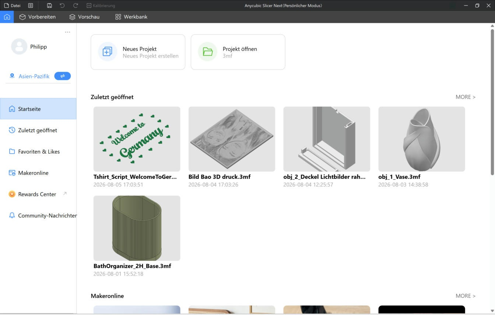
.3mf-Datei mit allen Einstellungen zurück. Darunter listet
Zuletzt geöffnet deine letzten Arbeiten.- Klicke auf Neues Projekt, um mit einem leeren Druckbett zu starten.
- Wechsle in den Reiter Vorbereiten in der oberen Menüleiste. Dort findet die gesamte Einrichtung statt.
Speichere deine Arbeit regelmäßig als Projekt (Strg + S). Nur so bleiben deine Einstellungen erhalten. Ein exportierter G-Code lässt sich später nicht mehr sinnvoll bearbeiten.
3Die Oberfläche kennenlernen
Der Reiter Vorbereiten ist deine Werkbank. Er gliedert sich in sechs Bereiche, die du dir einprägen solltest – alle weiteren Schritte verweisen auf diese Nummern.
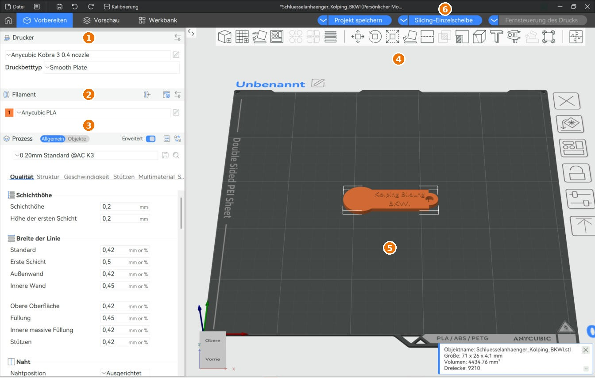
| Nr. | Bereich | Wofür er zuständig ist |
|---|---|---|
| 1 | Drucker | Auswahl des Druckermodells und der Druckbett-Oberfläche. Muss zum Gerät passen, das du tatsächlich benutzt. |
| 2 | Filament | Welches Material liegt eingelegt bereit? Hier stellst du PLA, PETG, TPU usw. ein. |
| 3 | Prozess | Alle Druckparameter, gegliedert in Reiter: Qualität, Struktur, Geschwindigkeit, Stützen, Multimaterial, Sonstiges. |
| 4 | Werkzeugleiste | Werkzeuge zum Bewegen, Drehen, Skalieren, Schneiden und Anordnen der Objekte. |
| 5 | 3D-Ansicht | Virtuelles Druckbett. Hier siehst du dein Objekt so, wie es später gedruckt wird. |
| 6 | Slicen & Ausgabe | Startet die Berechnung und öffnet danach die Export-Optionen. |
Navigation in der 3D-Ansicht
| Eingabe | Wirkung |
|---|---|
| Mausrad drehen | Zoomen (näher heran / weiter weg) |
| Rechte Maustaste ziehen | Ansicht verschieben |
| Linke Maustaste auf leerer Fläche ziehen | Ansicht drehen |
| Linksklick auf das Objekt | Objekt auswählen |
| Entf | Ausgewähltes Objekt löschen |
Zwei Ansichten im Prozess-Bereich: Allgemein und Objekte
Über die beiden kleinen Schaltflächen neben der Überschrift Prozess schaltest du zwischen zwei Darstellungen um:
- Allgemein – die vollständige Parameterliste mit allen Reitern (Qualität, Struktur, Geschwindigkeit, Stützen, Multimaterial, Sonstiges). Diese Ansicht nutzt du in den Kapiteln 7 bis 12.
- Objekte – eine Baumansicht aller Objekte auf der Druckplatte, darunter die wichtigsten Werte als Schnelleinstellungen im Reiter Häufig.
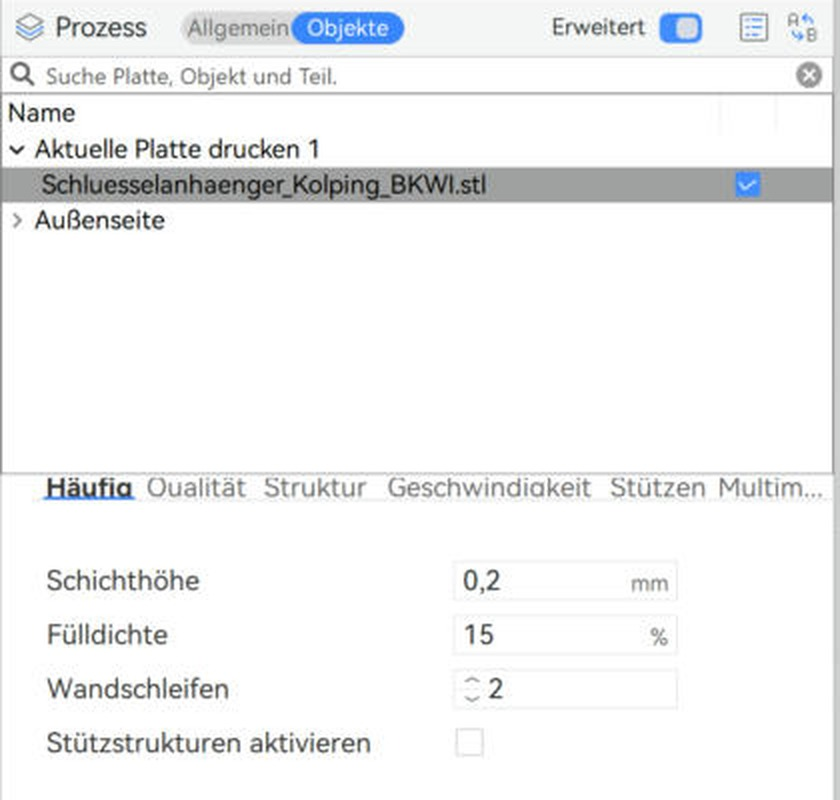
Für die allermeisten Aufgaben genügen die vier Werte aus dem Reiter Häufig: Schichthöhe, Fülldichte, Wandschleifen und Stützstrukturen aktivieren. Wenn du unter Zeitdruck arbeitest, stelle nur diese vier ein – alles andere übernimmt das Prozessprofil.
Die Werkzeugleiste im Überblick
Die vier linken Schaltflächen der Werkzeugleiste arbeiten immer, auch ohne ausgewähltes Objekt:
| Schaltfläche | Funktion |
|---|---|
| Hinzufügen Strg+I | Weiteres Modell importieren – dasselbe wie Datei → Importieren. |
| Druckplatte hinzufügen | Legt eine zweite virtuelle Druckplatte an. Praktisch, wenn ein Auftrag auf mehrere Drucke aufgeteilt werden muss. |
| Automatische Ausrichtung | Dreht das Objekt selbstständig so, dass es möglichst günstig liegt (große ebene Fläche nach unten). |
| Alle Objekte anordnen A | Verteilt alle Objekte mit passendem Abstand auf der Platte. |
Die übrigen Schaltflächen (Bewegen, Drehen, Skalieren, Schneiden, Text aufbringen u. a.) werden erst aktiv, sobald ein Objekt ausgewählt ist. Sind sie ausgegraut, hast du vergessen, das Modell anzuklicken.
4Schritt 1 – Das 3D-Modell importieren
Importieren bedeutet: eine Datei aus einem anderen Programm in den
Slicer laden. Der Anycubic Slicer Next versteht mehrere Formate – am
häufigsten arbeitest du mit .stl (aus Fusion, Blender oder von
Plattformen wie Printables) und .3mf.
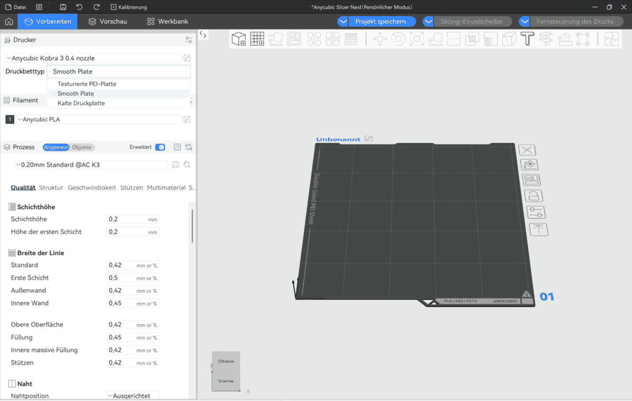
- Öffne das Menü Datei oben links.
- Fahre auf Importieren und wähle Importiere 3MF/STL/STEP/SVG/OBJ/AMF… (Tastenkürzel: Strg + I).
- Navigiere zu deiner Datei und bestätige mit Öffnen.
- Das Modell erscheint mittig auf dem virtuellen Druckbett.
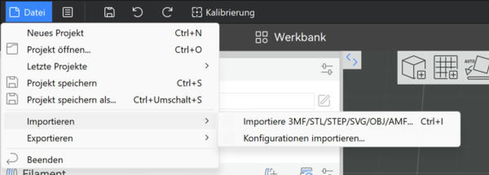
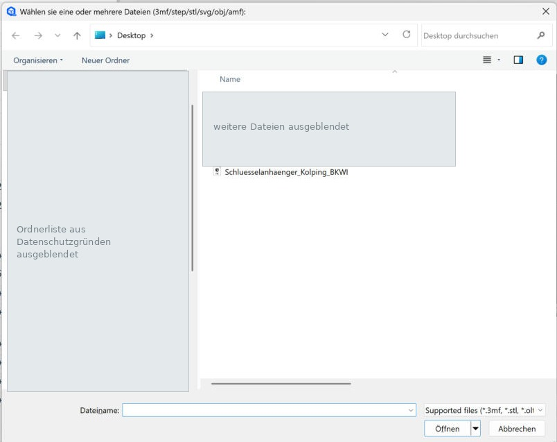
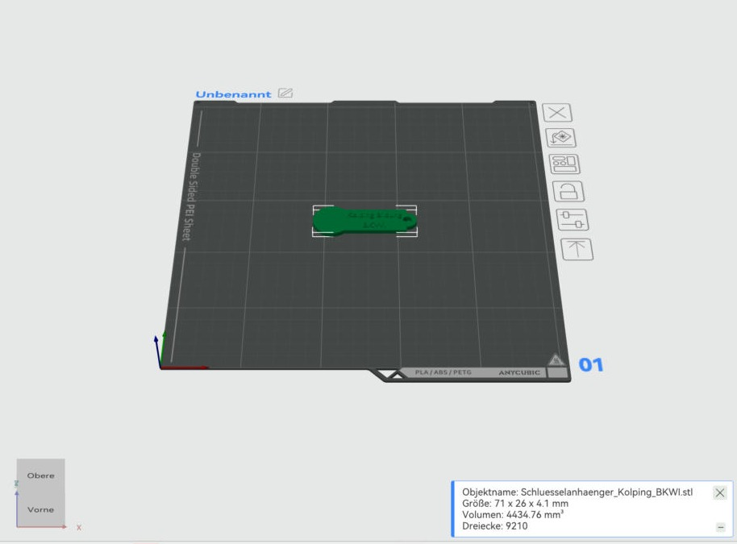
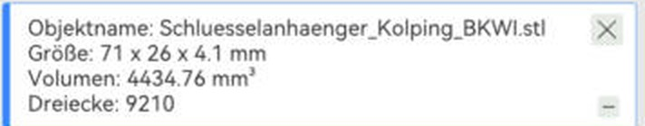
| Angabe | Bedeutung |
|---|---|
| Größe | Abmessungen in Millimetern: Länge × Breite × Höhe. Hier 71 × 26 × 4,1 mm. Prüfe sofort, ob das Objekt auf das Druckbett passt. |
| Volumen | Rauminhalt des Modells in Kubikmillimetern. Ein grober Anhaltspunkt für den Materialverbrauch – der echte Verbrauch hängt aber stark von der Füllung ab. |
| Dreiecke | Aus wie vielen Dreiecksflächen die Oberfläche besteht. Je mehr Dreiecke, desto feiner sind Rundungen aufgelöst – und desto größer ist die Datei. |
Erscheint das Objekt grau, durchgestrichen oder außerhalb des Bettrahmens, passt es nicht in den Bauraum. Verkleinere es (Kapitel 8) oder verschiebe es auf das Bett. Ein Objekt außerhalb des Bauraums lässt sich nicht slicen.
5Schritt 2 – Drucker und Druckbett prüfen
Der Slicer berechnet alles auf Grundlage eines bestimmten Druckermodells: Bauraumgröße, Düsendurchmesser, maximale Temperaturen. Stimmt die Auswahl nicht mit dem realen Gerät überein, ist der G-Code unbrauchbar.
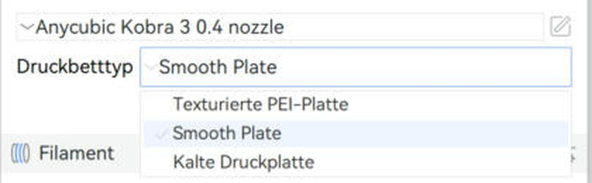
Anycubic Kobra 3 0.4 nozzle), darunter der
Druckbetttyp mit seinen drei Optionen.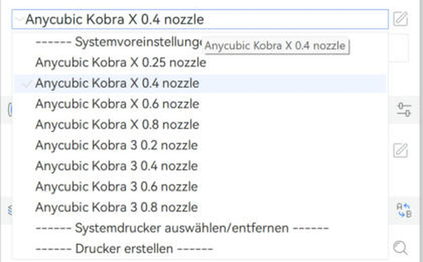
- Druckermodell: Muss exakt dem Gerät entsprechen, an dem du
druckst. Im BKWI arbeiten wir mit der Anycubic Kobra 3. Der
Zusatz
0.4 nozzlegibt den Düsendurchmesser an – bei uns immer0.4. Wählst du versehentlich eine andere Kobra oder eine andere Düse, rechnet der Slicer mit falschem Bauraum und falscher Linienbreite. - Druckbetttyp: Die Oberfläche der Druckplatte. Die Kobra 3 bietet
drei Möglichkeiten:
Texturierte PEI-Platte– raue Oberfläche, gibt der Unterseite eine matte Struktur.Smooth Plate– glatte Platte, ergibt eine glänzende Unterseite. Unser Standard.Kalte Druckplatte– für Materialien, die ohne Heizbett gedruckt werden.
Sobald du den Drucker wechselst, passt der Slicer automatisch das
Prozessprofil an. Aus 0.20mm Standard @AC KX wird
0.20mm Standard @AC K3. Das Kürzel am Ende (K3) ist die
Kurzform des Druckers – ein schneller Kontrollblick, ob alles zusammenpasst.
PEI (Polyetherimid) ist eine Kunststoffbeschichtung auf der Federstahl-Druckplatte. Sie hält das Objekt im warmen Zustand fest und gibt es nach dem Abkühlen von selbst wieder frei – deshalb sollte man ein fertiges Werkstück nie mit Gewalt abhebeln.
6Schritt 3 – Das Filament auswählen
Jeder Kunststoff schmilzt bei einer anderen Temperatur und verhält sich beim Abkühlen anders. Deshalb muss der Slicer wissen, welches Material eingelegt ist. Ein Klick auf das Auswahlfeld öffnet die Liste.
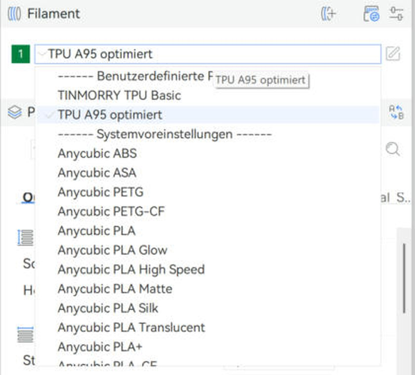
| Material | Eigenschaften | Typischer Einsatz im Unterricht |
|---|---|---|
| PLA | Formstabil, geringe Verformung beim Abkühlen, druckt sich am einfachsten. Wenig hitzebeständig (ab ca. 60 °C weich). | Standardmaterial. Schilder, Modelle, Prototypen, Schlüsselanhänger. |
| PETG | Zäher und temperaturbeständiger als PLA, dafür anspruchsvoller im Druckbild (neigt zu Fäden). | Funktionsteile, Halterungen, Gehäuse. |
| ABS / ASA | Sehr temperaturbeständig, verzieht sich aber stark beim Abkühlen. Braucht eine geschlossene Kammer und gute Absaugung. | Nur nach Absprache mit der Lehrkraft. |
| TPU | Gummiartig und flexibel, muss sehr langsam gedruckt werden. | Dichtungen, Stoßschutz, flexible Bänder. |
Die Einstellung im Slicer beschreibt nicht, was gedruckt werden soll – sie beschreibt, was am Drucker tatsächlich eingelegt ist. Kontrolliere immer die Rolle am Gerät, bevor du wählst.
Das Modell einfärben
Vor dem Filamentnamen steht ein kleines farbiges Quadrat mit der Nummer
1. Es zeigt die Filamentfarbe. Ein Klick darauf öffnet den
Farbwähler – und das Modell auf dem Druckbett wechselt sofort die Farbe.
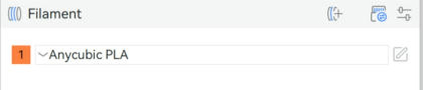
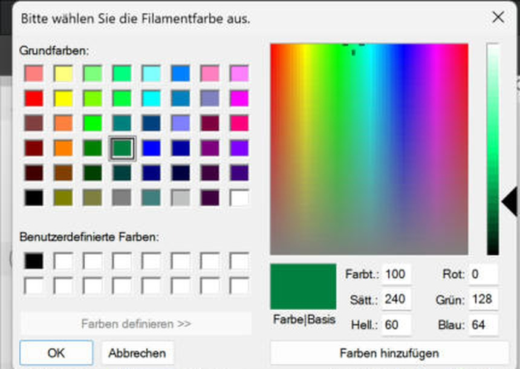
- Klicke auf das Farbquadrat vor dem Filamentnamen.
- Wähle eine der Grundfarben – oder klicke frei in das große Farbfeld und stelle die Helligkeit über den schmalen Balken rechts ein.
- Bestätige mit OK. Das Modell erscheint sofort in der neuen Farbe.
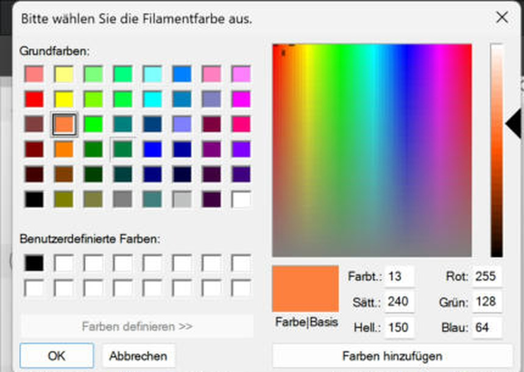
Rot 255,
Grün 128, Blau 64.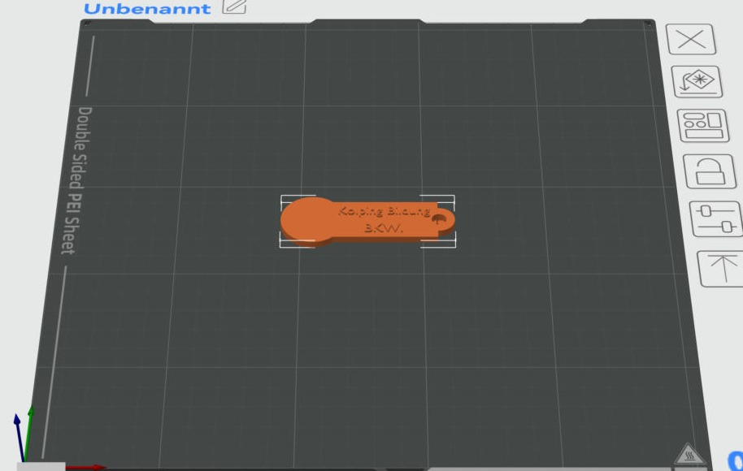
Die drei Zahlen Rot, Grün und Blau beschreiben eine
Farbe additiv: Jeder Wert reicht von 0 (Farbanteil aus) bis
255 (Farbanteil voll). 255/128/64 heißt also
„voll Rot, halb Grün, wenig Blau“ – ergibt Orange. Auf demselben Prinzip
arbeitet jeder Bildschirm. Das Kolping-Orange hat übrigens die Werte
238/114/2.
Der Farbwähler ändert nur die Darstellung im Slicer. Der Drucker druckt in der Farbe des Filaments, das tatsächlich eingelegt ist – ein Klick auf „Orange“ macht aus weißem PLA kein oranges. Der Nutzen liegt woanders:
- Realistische Vorschau: Du siehst, wie das Werkstück später wirkt.
- Übersicht bei mehreren Objekten: Verschiedene Farben helfen, Bauteile auseinanderzuhalten.
- Kontrast: Auf dem dunklen Druckbett sind helle Farben deutlich besser zu erkennen als dunkle.
7Schritt 4 – Prozessprofil und Schichthöhe
Ein Prozessprofil ist ein gespeichertes Paket aus mehreren hundert Druckparametern. Statt jeden Wert einzeln einzustellen, wählst du ein passendes Profil und passt danach nur noch wenige Werte an.
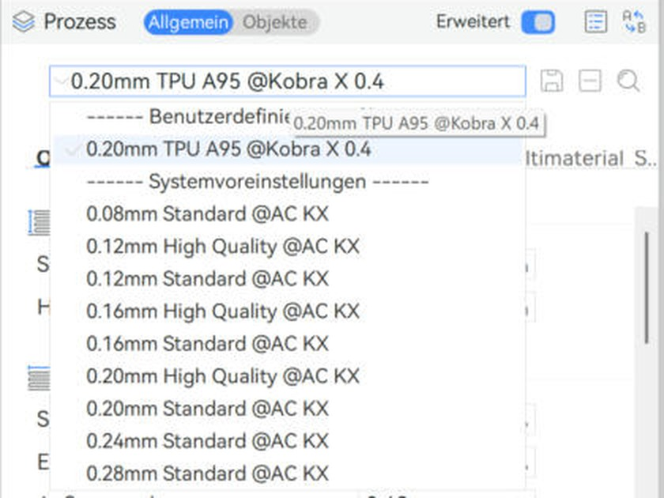
0.08mm … 0.28mm) gibt die
Schichthöhe an.Die Schichthöhe – der wichtigste Kompromiss
Die Schichthöhe (englisch layer height) legt fest, wie dick jede einzelne gedruckte Scheibe ist. Sie ist der zentrale Kompromiss zwischen Oberflächenqualität und Druckdauer.
| Schichthöhe | Ergebnis | Wann sinnvoll? |
|---|---|---|
| 0,08 – 0,12 mm | Sehr glatte Oberfläche, feine Details – aber zwei- bis dreifache Druckzeit. | Kleine Figuren, sichtbare Schauteile, feine Schrift. |
| 0,16 – 0,20 mm | Guter Kompromiss aus Qualität und Zeit. | Standard im Unterricht. Für fast alles geeignet. |
| 0,24 – 0,28 mm | Deutlich sichtbare Schichtstufen, dafür sehr schnell. | Grobe Prototypen, Passungstests, große einfache Teile. |
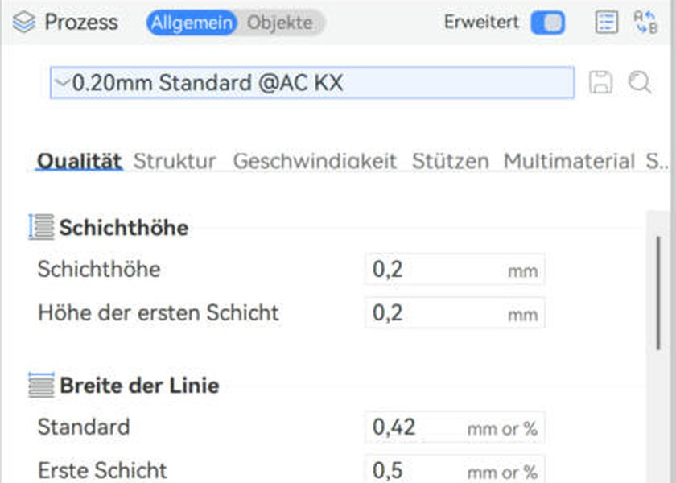
Die Schichthöhe sollte höchstens 75 % des Düsendurchmessers betragen. Bei einer 0,4-mm-Düse sind das maximal 0,3 mm. Darüber verbinden sich die Schichten nicht mehr zuverlässig.
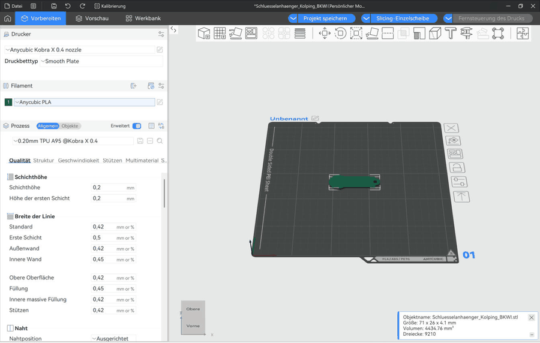
8Schritt 5 – Das Objekt ausrichten
Wie ein Objekt auf dem Druckbett liegt, entscheidet über Festigkeit, Oberflächenqualität und darüber, ob überhaupt Stützmaterial nötig wird. Drei Werkzeuge stehen dafür in der Werkzeugleiste bereit.
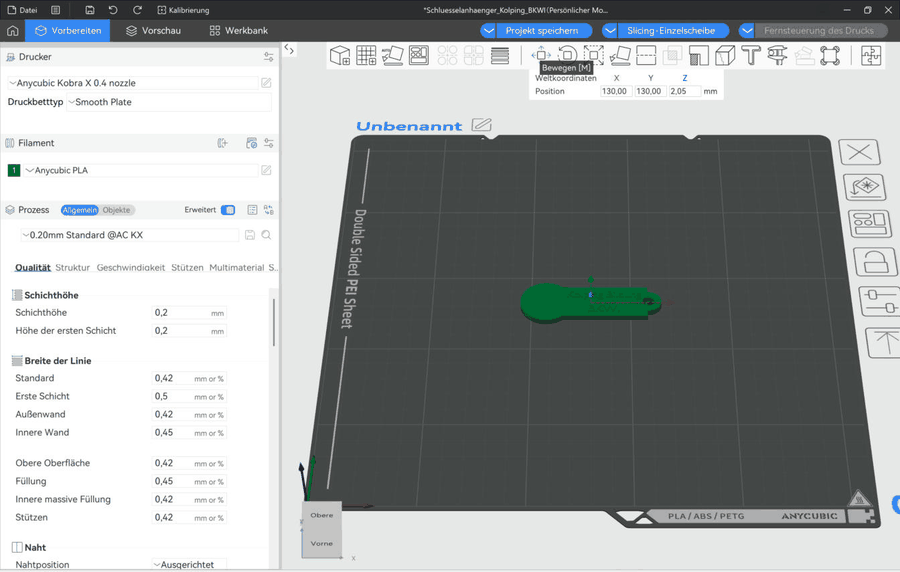
Bewegen (Taste M)
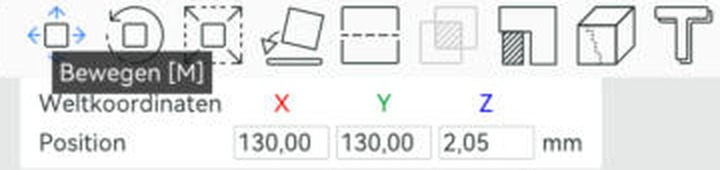
Du kannst das Objekt mit der Maus an den farbigen Pfeilen ziehen oder exakte Zahlenwerte eintippen. Z sollte in der Regel so bleiben, dass das Objekt auf dem Bett aufliegt.
Drehen (Taste R)
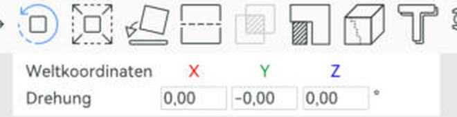
Ein gedrucktes Teil ist quer zur Schichtrichtung am schwächsten – die Schichten können dort auseinandergezogen werden. Lege ein Bauteil also so, dass die spätere Belastung innerhalb einer Schicht wirkt und nicht zwischen zwei Schichten. Zweitens gilt: Je flacher ein Objekt liegt, desto weniger Stützmaterial wird gebraucht.
Skalieren (Taste S) – die Größe verändern
Skalieren bedeutet: das Objekt vergrößern oder verkleinern, ohne seine Form zu verändern. Das ist der Werkzeugkasten für die Frage „Wie groß soll mein Schlüsselanhänger eigentlich werden?“
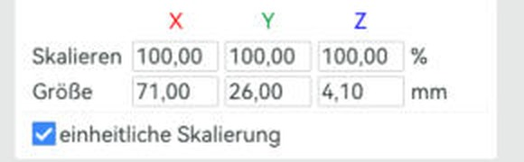
100 % heißt: Originalgröße der Datei.Drei Wege, die Größe zu ändern
- Anfasser ziehen: An den farbigen Würfeln am Objekt ziehen. Ein Eckpunkt skaliert alle Achsen gleichzeitig, ein Punkt an der Kantenmitte nur eine Achse. Schnell, aber ungenau.
- Prozentwert eintragen:
200in ein Prozentfeld schreiben – das Objekt wird doppelt so lang, doppelt so breit und doppelt so hoch. - Zielmaß eintragen: In die Zeile Größe direkt den
gewünschten Millimeterwert schreiben, z. B.
50für eine Länge von genau 50 mm. Das ist der Weg, wenn ein Bauteil in eine vorhandene Öffnung passen muss.
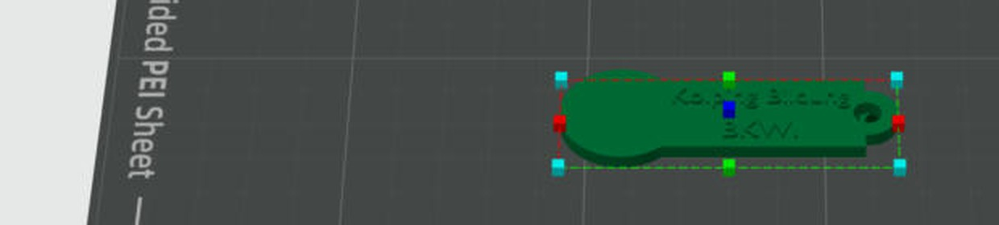
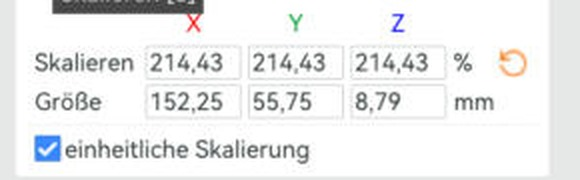
214,43 %. Alle drei Achsen sind gleich mitgewachsen – aus
71 × 26 × 4,10 mm wurden
152,25 × 55,75 × 8,79 mm. Rechts erscheint zusätzlich
ein Zurücksetzen-Symbol.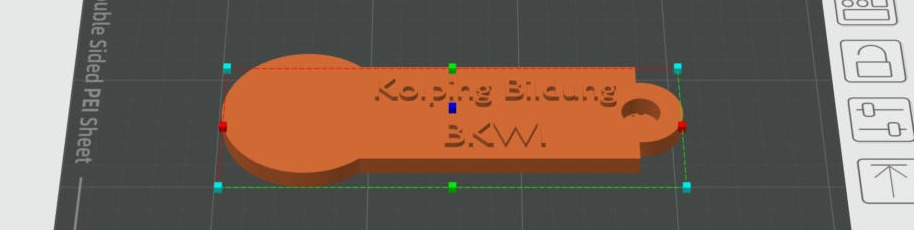
Ist der Haken gesetzt, ändern sich alle drei Achsen im gleichen Verhältnis – das Objekt bleibt proportional. Nimmst du den Haken heraus, kannst du das Objekt gezielt in einer Richtung stauchen oder strecken. Das wird schnell unbeabsichtigt gemacht: Haken im Zweifel gesetzt lassen.
Was beim Vergrößern wirklich passiert
Das ist der Punkt, an dem viele sich verschätzen: Wenn du ein Objekt auf das Doppelte vergrößerst, wird es nicht doppelt so teuer – sondern deutlich mehr. Der Grund ist einfache Geometrie.
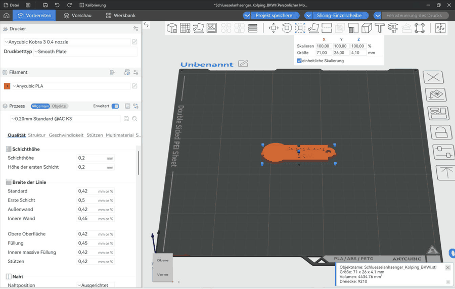
Wir haben genau das gemessen: dasselbe Modell, dieselben Einstellungen (0,2 mm Schichthöhe, 15 % Füllung, 2 Wandschleifen, PLA), einmal bei 100 % und einmal bei 214,43 % gesliced.
| Messwert | 100 % | 214,43 % | Faktor |
|---|---|---|---|
| Länge × Breite × Höhe | 71 × 26 × 4,10 mm | 152,25 × 55,75 × 8,79 mm | 2,14 × |
| Volumen | 4.434,76 mm³ | 43.725,7 mm³ | 9,86 × |
| Anzahl Schichten | 20 | 44 | 2,2 × |
| Filamentverbrauch | 3,40 g | 20,69 g | 6,1 × |
| Druckdauer | 8 min 14 s | 40 min 9 s | 4,9 × |
| Materialkosten | 0,07 | 0,41 | 5,9 × |
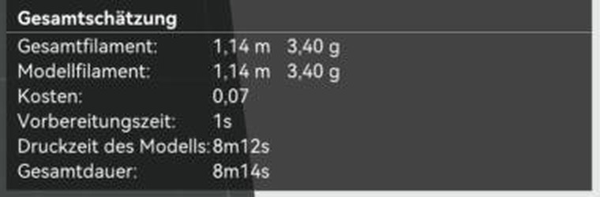
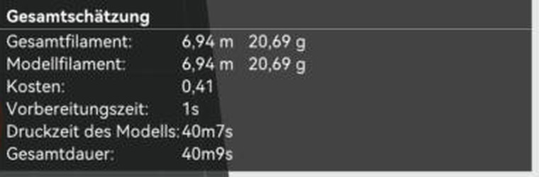
Verdoppelst du alle Kantenlängen eines Körpers, dann
- verdoppelt sich die Länge (Faktor 2 = 2¹),
- vervierfacht sich die Fläche (Faktor 4 = 2²),
- verachtfacht sich das Volumen (Faktor 8 = 2³).
In unserer Messung war der Faktor 2,14 – und 2,14³ ≈ 9,8. Genau das zeigt die Volumenzeile in der Tabelle.
Ein guter Beobachter fragt sich: Wenn sich das Volumen fast verzehnfacht, warum steigt der Verbrauch dann „nur“ auf das Sechsfache? Weil das Objekt innen hohl ist. Der Slicer druckt Wände und Deckschichten – die wachsen mit der Fläche, also nur quadratisch – und füllt den Innenraum mit 15 % Gitter. Nur dieser Anteil wächst kubisch. Bei 100 % Füllung läge der Faktor tatsächlich bei rund 9,9.
Was du beim Verändern der Größe sonst noch beachten musst
| Beim Vergrößern | Folge |
|---|---|
| Bauraum | Das Objekt kann über den Rand hinauswachsen. Der Slicer markiert es dann und verweigert das Slicen. Die Kobra 3 hat einen Bauraum von 250 × 250 × 260 mm. |
| Zeit und Material | Steigen überproportional – siehe Tabelle oben. Plane die Unterrichtszeit realistisch. |
| Details | Werden größer und dadurch besser druckbar. Feine Schrift, die bei 100 % verschwimmt, wird bei 200 % oft erst lesbar. |
| Beim Verkleinern | Folge |
|---|---|
| Wandstärke | Achtung: Die Wandstärke schrumpft nicht mit! Sie bleibt bei 2 × 0,42 mm, weil sie von der Düse bestimmt wird. Ein bei 50 % gedrucktes Teil ist deshalb im Verhältnis viel massiver – und wirkt oft plump. |
| Details | Alles unter etwa 0,5 mm kann die 0,4-mm-Düse nicht mehr abbilden. Feine Gravuren verschwinden einfach. |
| Löcher und Zapfen | Ein Loch für einen Schlüsselring, das bei 100 % 5 mm misst, ist bei 50 % nur noch 2,5 mm groß – der Ring passt nicht mehr. |
| Schichthöhe | Bleibt ebenfalls bei 0,2 mm. Ein 4 mm hohes Teil hat 20 Schichten, bei 50 % nur noch 10 – die Treppenstufen fallen relativ stärker auf. |
Sobald du skaliert hast, erscheint im Werkzeugfenster ein Zurücksetzen-Symbol (gebogener Pfeil). Alternativ bringt dich die Rückgängig-Schaltfläche in der obersten Menüleiste (Strg + Z) zuverlässig auf 100 % zurück.
In der Werkzeugleiste findest du außerdem Schaltflächen für Automatisch anordnen (verteilt mehrere Objekte sinnvoll auf dem Bett) und Automatisch ausrichten (legt das Objekt auf seine größte ebene Fläche). Beide sparen viel Handarbeit.
Negativbeispiel: Was passiert, wenn das Objekt schlecht liegt?
Theorie überzeugt selten. Deshalb hier derselbe Schlüsselanhänger zweimal gesliced – einmal flach liegend, einmal um 47,6° gekippt. Alle übrigen Einstellungen sind identisch. Das Ergebnis ist drastisch.
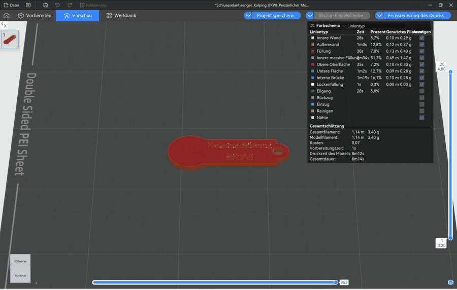
Schritt 1 – Das Objekt wird gekippt
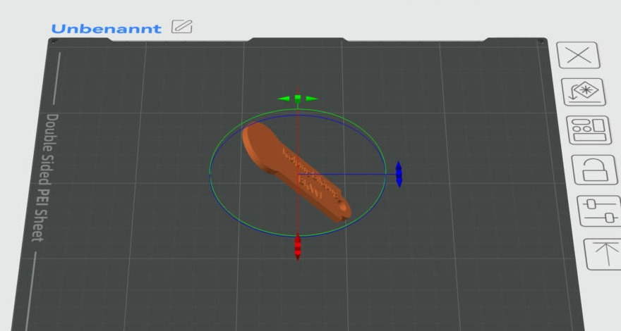
47,60° um die Y-Achse gekippt. Es steht jetzt schräg
im Raum und berührt das Druckbett nur noch mit einer Kante.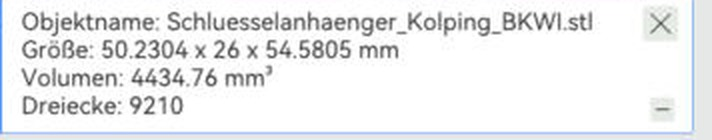
71 × 26 × 4,1 mm ist
50,23 × 26 × 54,58 mm geworden. Die Bauhöhe ist von
4,1 mm auf 54,6 mm gesprungen – das Dreizehnfache. Und die
Bauhöhe bestimmt die Anzahl der Schichten.Schritt 2 – Stützen werden nötig
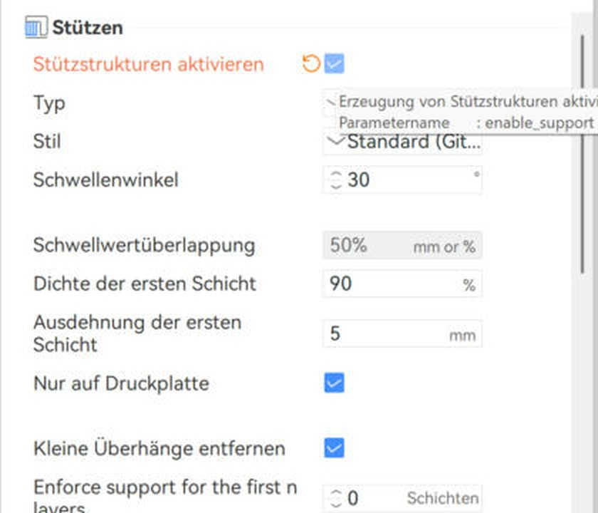
Schritt 3 – Das Ergebnis in der Vorschau
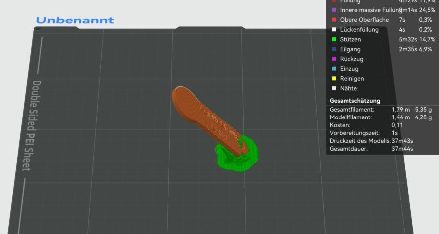
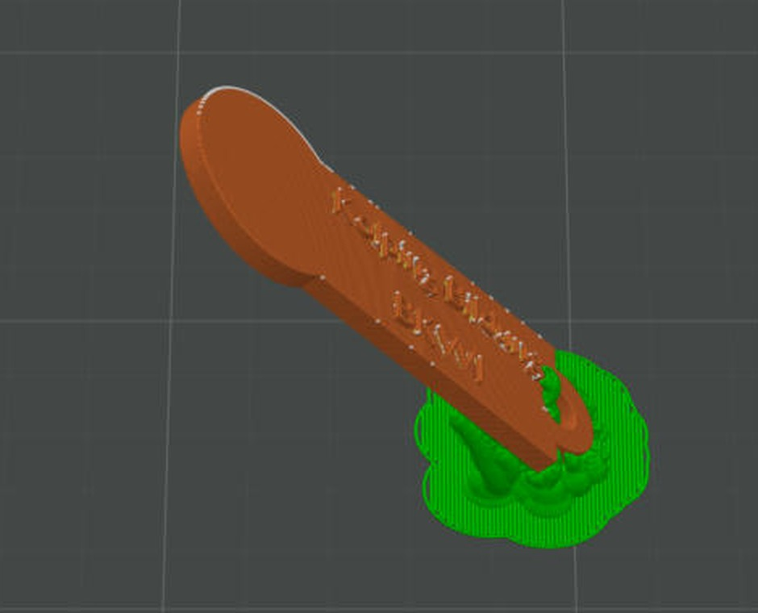
Der direkte Vergleich
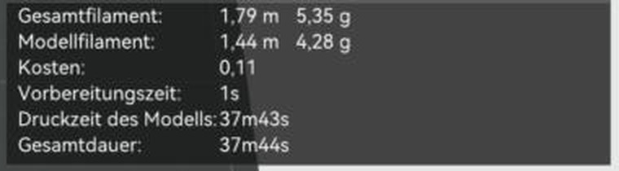
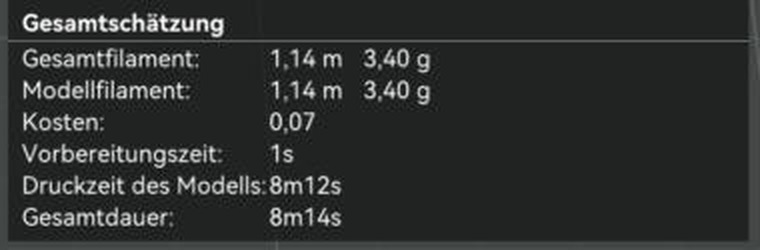
| Messwert | flach liegend | um 47,6° gekippt | Unterschied |
|---|---|---|---|
| Bauhöhe | 4,10 mm | 54,58 mm | 13 × höher |
| Anzahl Schichten | 20 | 272 | 13,6 × mehr |
| Druckdauer | 8 min 14 s | 37 min 44 s | 4,6 × länger |
| Filament gesamt | 3,40 g | 5,35 g | + 57 % |
| davon Stützmaterial | 0,00 g | 1,07 g | 20 % Abfall |
| Materialkosten | 0,07 | 0,11 | + 57 % |
| Nacharbeit | keine | Stützen abbrechen, Oberfläche schleifen | — |
| Standfestigkeit | hoch (große Auflagefläche) | gering (kippt leicht um) | — |
Dasselbe Werkstück, dieselben Einstellungen, dieselbe Maschine. Der einzige Unterschied ist ein Drehwinkel – und der kostet 29 Minuten Druckzeit, 1,07 g Material für den Mülleimer und zusätzliche Handarbeit beim Entfernen der Stützen. Ein einziger falscher Mausklick beim Drehen.
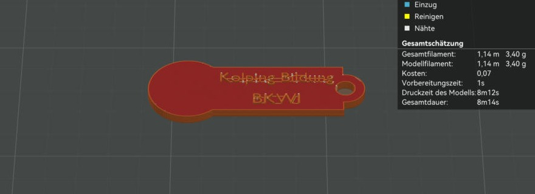
- Größte ebene Fläche nach unten. Das gibt Haftung, Standfestigkeit und meist die kürzeste Druckzeit.
- Bauhöhe niedrig halten. Die Höhe bestimmt die Schichtzahl – und damit die Druckdauer, fast unabhängig vom Volumen.
- Erst drehen, dann stützen. Stützmaterial ist die Notlösung, nicht der erste Griff.
- Belastungsrichtung bedenken. Die Kraft soll innerhalb einer Schicht wirken, nicht zwischen zwei Schichten.
- Sichtseite nach oben oder außen. Flächen, die auf Stützen liegen, werden nie schön.
9Schritt 6 – Wände und Schalen
Ein 3D-Druck ist innen fast nie massiv. Er besteht aus einer Außenhaut und einem lockeren Stützgerüst im Inneren. Die Außenhaut wird im Reiter Struktur eingestellt.
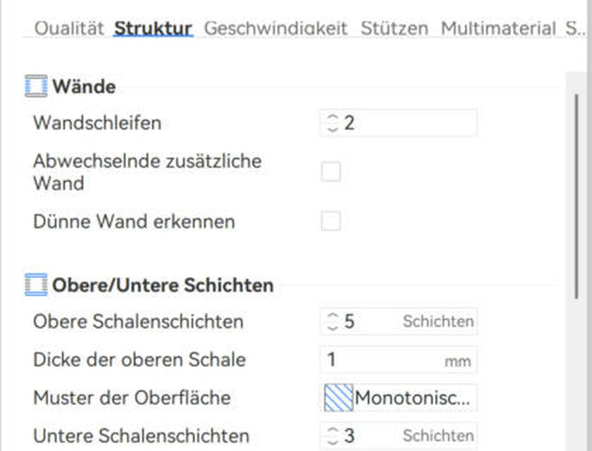
| Parameter | Erklärung |
|---|---|
| Wandschleifen | Wie viele Linien der Drucker außen nebeneinander legt, bevor er die Füllung druckt. Bei 0,42 mm Linienbreite ergeben 2 Wandschleifen ca. 0,85 mm Wandstärke. Mehr Wände = stabiler, aber auch mehr Material und Zeit. Für Belastbarkeit sind zusätzliche Wände wirksamer als mehr Füllung. |
| Obere Schalenschichten | Anzahl der massiven Deckschichten oben. Zu wenige davon führen zu Löchern in der Oberseite (die Füllung „scheint durch“). Richtwert: 4–5. |
| Untere Schalenschichten | Massive Schichten am Boden. Richtwert: 3–4. |
| Muster der Oberfläche | Wie die Deckschichten gefüllt werden. Monotonisch legt alle Linien in dieselbe Richtung und ergibt das gleichmäßigste Aussehen. |
Statt „Wandschleife“ liest man in anderen Slicern oft Perimeter (griechisch: Umfang). Gemeint ist dasselbe: eine umlaufende Konturlinie der Außenwand.
10Schritt 7 – Die Füllung (Infill)
Die Füllung ist das Gitterwerk im Inneren des Objekts. Sie trägt die Deckschichten und gibt dem Bauteil Steifigkeit – ohne es massiv und damit schwer, teuer und langsam zu machen.
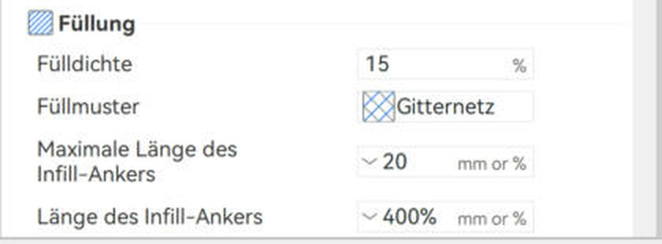
Fülldichte
| Wert | Verwendung |
|---|---|
| 0 % | Hohl. Nur für Vasen und reine Schauobjekte. |
| 10 – 15 % | Standard. Für Schilder, Modelle, Dekoration, Schlüsselanhänger. |
| 25 – 40 % | Belastete Funktionsteile, Halterungen, Gehäuse. |
| über 50 % | Nur in Ausnahmefällen. Der Zuwachs an Festigkeit steht kaum noch im Verhältnis zu Material und Zeit. |
Füllmuster
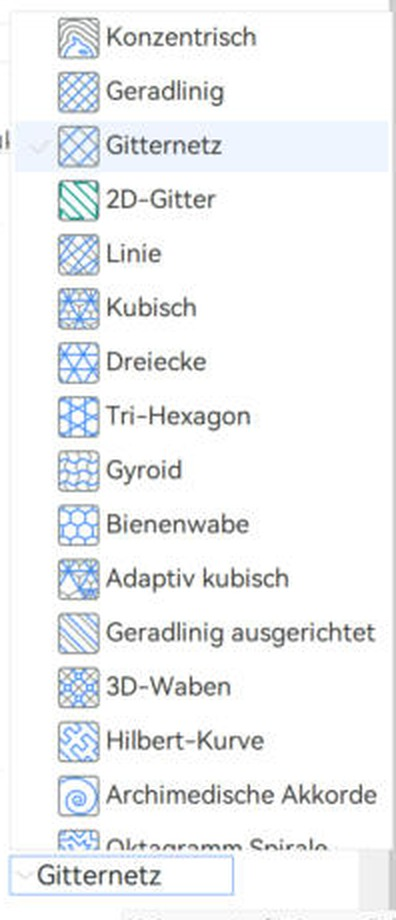
| Muster | Eigenschaft |
|---|---|
| Gitternetz | Schnell und in alle Richtungen ordentlich stabil. Guter Allrounder – Standard. |
| Gyroid | Gleichmäßig stabil in allen Raumrichtungen, elastisch, materialsparend. Etwas langsamer. |
| Bienenwabe | Sehr stabil, aber deutlich langsamer im Druck. |
| Linie | Sehr schnell, geringe Festigkeit. Für reine Anschauungsmodelle. |
| Konzentrisch | Folgt der Außenkontur. Üblich bei flexiblen Materialien wie TPU. |
11Schritt 8 – Stützstrukturen
Ein FDM-Drucker kann nicht in die Luft drucken – jede Schicht braucht eine Unterlage. Ragt ein Bauteil zu weit über, muss der Slicer ein Hilfsgerüst mitdrucken: die Stützstruktur (englisch support). Sie wird nach dem Druck abgebrochen und weggeworfen.
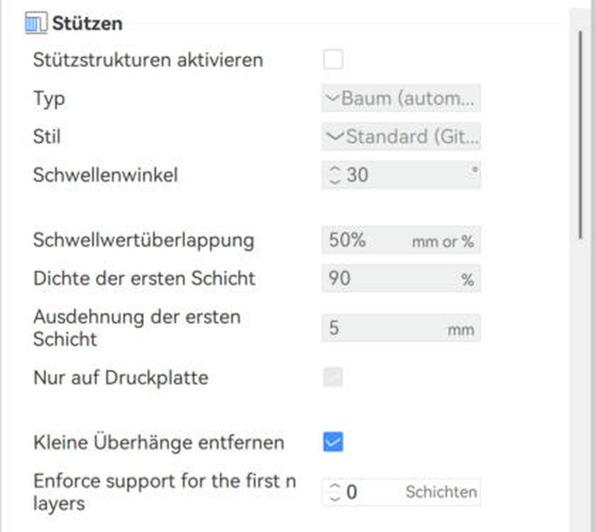
| Parameter | Erklärung |
|---|---|
| Stützstrukturen aktivieren | Der Hauptschalter. Standardmäßig aus – aktiviere ihn nur, wenn dein Objekt es wirklich braucht. |
| Typ | Normal = senkrechte Säulen, sehr zuverlässig, aber materialintensiv. Baum = astartige Streben, die nur die kritischen Stellen berühren; spart Material und lässt sich leichter entfernen. |
| Schwellenwinkel | Ab welcher Neigung gestützt wird. Bei 30° gilt: Flächen, die flacher als 30° zur Waagerechten stehen, bekommen Stützen. Kleinerer Wert = weniger Stützen. |
| Nur auf Druckplatte | Stützen wachsen ausschließlich vom Druckbett nach oben – nie auf dem Objekt selbst. Schont die Oberfläche, funktioniert aber nicht bei jeder Geometrie. |
Überhänge bis etwa 45° zur Senkrechten druckt ein FDM-Drucker in aller Regel ohne Hilfe: Jede Schicht liegt noch weit genug auf der darunterliegenden auf. Erst flachere Überhänge brauchen Stützen. Prüfe deshalb zuerst, ob eine andere Ausrichtung (Kapitel 8) das Problem löst – das ist immer die bessere Lösung.
12Schritt 9 – Haftung: Saum und Umrandung
Löst sich die erste Schicht während des Drucks vom Bett, ist der Druck verloren. Zwei Hilfsmittel im Reiter Sonstiges verbessern die Haftung.
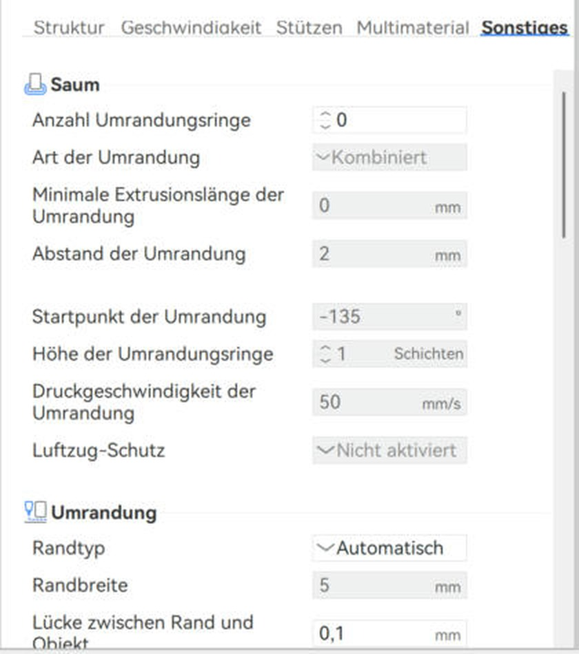
| Element | Funktion |
|---|---|
| Saum (Skirt) | Eine oder mehrere Linien, die mit Abstand um das Objekt gezogen werden – sie berühren es nicht. Ihr Zweck: Die Düse wird vor dem eigentlichen Druck „freigespült“ und du siehst sofort, ob der Materialfluss gleichmäßig ist. |
| Umrandung (Brim) | Ein flacher Kragen, der direkt am Objekt anliegt und dessen Standfläche vergrößert. Er verhindert, dass sich Ecken beim Abkühlen hochziehen. Nach dem Druck wird er abgeschnitten. Randbreite 5 mm ist ein guter Startwert. |
| Druckbasis (Raft) | Eine komplette Unterlage, auf der das Objekt gedruckt wird (im Reiter Stützen). Sehr materialintensiv – bei modernen Druckbetten meist unnötig. |
Warping (engl. „Verziehen“) bezeichnet das Hochziehen der Ecken eines Werkstücks. Ursache: Der Kunststoff schrumpft beim Abkühlen. Die Umrandung wirkt dagegen, weil sie die Kanten am Bett festhält.
13Schritt 10 – Slicen
Sind alle Einstellungen gesetzt, startest du die Berechnung. Der Slicer zerlegt das Modell nun in Schichten und ermittelt für jede Schicht die Werkzeugwege.
- Klicke auf Slicing-Einzelscheibe.
- Warte, bis die Berechnung durchgelaufen ist. Bei einfachen Objekten dauert das nur Sekunden.
- Der Slicer wechselt automatisch in den Reiter Vorschau.
Erscheint eine Fehlermeldung, liegt es fast immer an einer dieser Ursachen: Das Objekt steht außerhalb des Bauraums, es überlappt sich mit einem anderen Objekt, oder das Modell ist fehlerhaft (offene Flächen, „nicht wasserdicht“). Lies die Meldung – sie benennt die Ursache meist direkt.
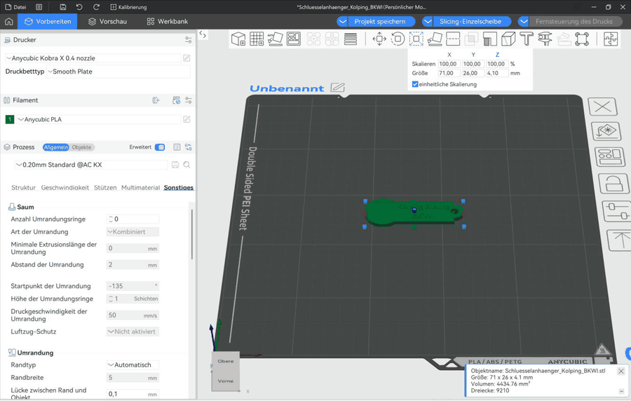
14Schritt 11 – Die Vorschau auswerten
Dieser Schritt wird am häufigsten übersprungen – und ist der wichtigste. In der Vorschau siehst du genau das, was der Drucker gleich tun wird. Fehler, die du hier entdeckst, kosten dich zwei Minuten. Fehler, die du erst am Drucker entdeckst, kosten eine Stunde und eine Rolle Filament.
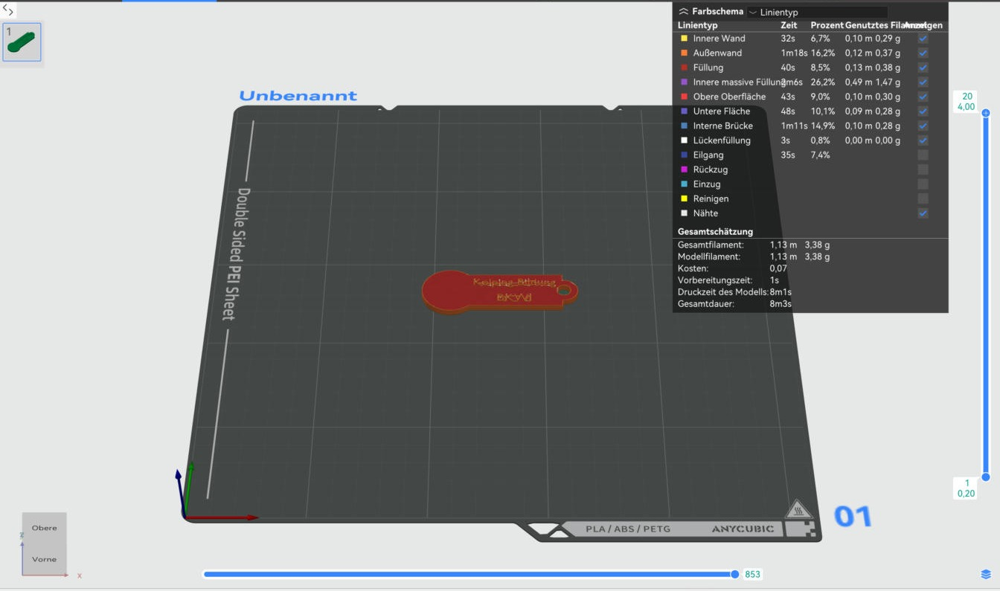
Das Farbschema „Linientyp“
Jede Farbe steht für eine Aufgabe, die der Druckkopf gerade erledigt. So erkennst du auf einen Blick, wofür Zeit und Material verbraucht werden.
| Linientyp | Bedeutung |
|---|---|
| Außenwand | Die sichtbare äußerste Konturlinie. Bestimmt maßgeblich die Optik. |
| Innere Wand | Die Wandlinien dahinter. Sorgen für Stabilität. |
| Füllung | Das lockere Gitter im Inneren. |
| Innere massive Füllung | Verdichtete Bereiche unter Deckflächen. |
| Obere Oberfläche / Untere Fläche | Die massiven Deckschichten oben und unten. |
| Interne Brücke | Linien, die frei über einen Hohlraum gespannt werden. |
| Eilgang | Leerfahrten ohne Materialausstoß. Viele Eilgänge bedeuten Zeitverlust und begünstigen Fadenbildung. |
Den Schichtregler benutzen
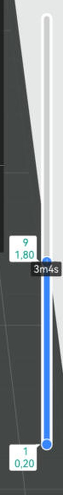
Ziehe den Regler nach unten, um in das Objekt hineinzuschauen. So kontrollierst du Füllmuster, Wandstärken und Stützen im Inneren. Der waagerechte Regler am unteren Rand fährt zusätzlich den Weg innerhalb einer einzelnen Schicht ab.
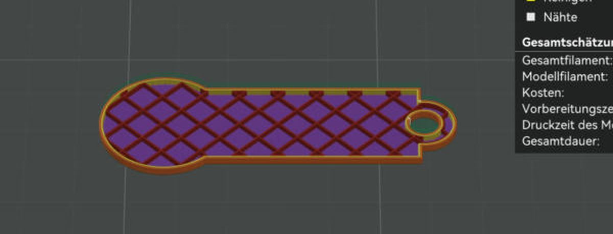
Den Schichtaufbau verstehen
Wenn du den Schichtregler langsam von unten nach oben ziehst, wird der gesamte Bauplan des Werkstücks sichtbar. Er folgt immer demselben Aufbau: massiver Boden → lockere Füllung → massiver Deckel.
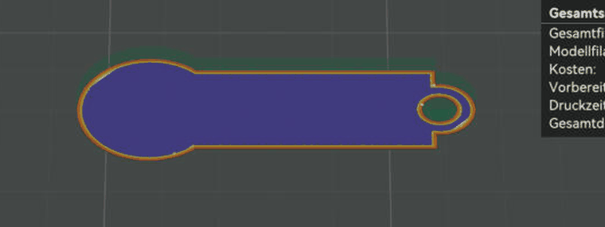
| Schicht | Was zu sehen ist | Warum das so ist |
|---|---|---|
| 1 (0,20 mm) | Vollständig gefüllte Fläche | Die unteren Schalenschichten müssen dicht sein – sie bilden den Boden und sorgen für Haftung auf dem Druckbett. |
| 4 (0,80 mm) | Gittermuster mit Hohlräumen | Der Boden ist fertig, jetzt druckt der Drucker die Füllung mit 15 % Dichte. Material und Zeit werden gespart. |
| 7 (1,40 mm) | Weiterhin Gittermuster | Der mittlere Bereich des Werkstücks. Hier liegt das eigentliche Volumen – und hier wird am meisten gespart. |
| 13 (2,60 mm) | Wieder vollständig gefüllt | Vorbereitung der Deckfläche: Die innere massive Füllung schafft eine geschlossene Unterlage, damit die Oberseite nicht durchhängt. |
| 20 (4,00 mm) | Deckschicht mit sichtbarem Schriftzug | Die obere Schalenschicht. Der eingelassene Text erscheint als Aussparung – so entsteht die Gravur. |
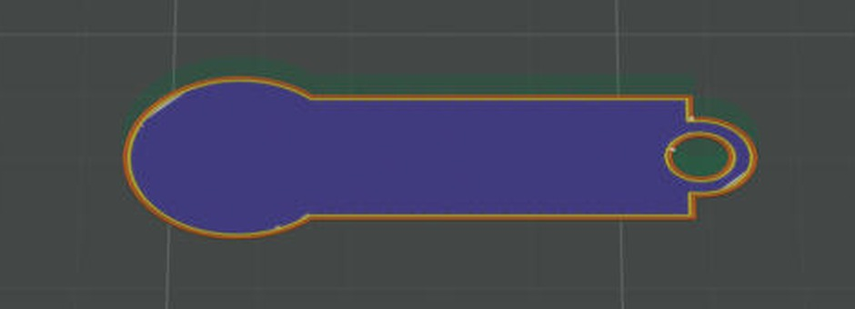
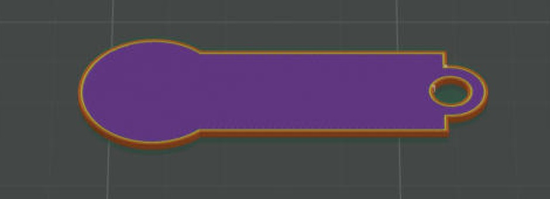
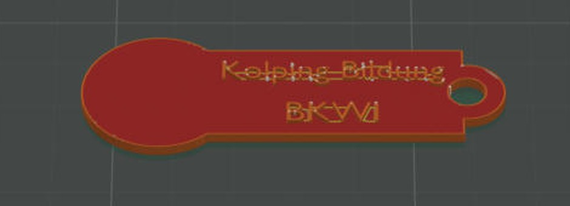
Die Gesamtschätzung lesen
| Wert | Bedeutung |
|---|---|
| Gesamtfilament | Verbrauch in Metern und Gramm. Die Grammangabe brauchst du für die Materialabrechnung. |
| Kosten | Rechnerische Materialkosten auf Basis des im Filamentprofil hinterlegten Preises. |
| Druckzeit des Modells | Reine Druckdauer. |
| Gesamtdauer | Druckzeit plus Vorbereitung (Aufheizen, Kalibrieren). Dieser Wert zählt für die Planung. |
15Schritt 12 – Die Druckdatei exportieren
Ist die Vorschau in Ordnung, erzeugst du die Datei für den Drucker.
| Option | Wann verwenden? |
|---|---|
| G-Code als Datei exportieren | Der Standardweg im Unterricht. Speichere die Datei auf den USB-Stick bzw. die SD-Karte, die zum Drucker gehört. |
| Fernsteuerung des Drucks | Direkte Übertragung an einen Drucker im Netzwerk. Nur nach Freigabe durch die Lehrkraft. |
| An Cloud-Datei senden | Ablage im Anycubic-Cloud-Konto. Im Unterricht nicht erforderlich. |
Vergib einen Namen, aus dem die wichtigsten Parameter hervorgehen –
das erspart später viel Rätselraten:
Schluesselanhaenger_PLA_020mm_15Infill_Riegert.gcode
- Projekt speichern (
.3mf) → deine bearbeitbare Arbeitsdatei mit allen Einstellungen. Immer zusätzlich speichern! - G-Code exportieren (
.gcode) → die fertige Druckdatei für die Maschine. Nicht mehr sinnvoll änderbar.
16Der Reiter Werkbank – den Drucker verwalten
Neben Vorbereiten und Vorschau gibt es einen dritten Reiter: die Werkbank. Sie hat mit dem Slicen nichts zu tun – hier verwaltest du den Drucker selbst, sofern er über das Netzwerk verbunden ist.
| Bereich | Funktion |
|---|---|
| Druckerliste (links) | LAN-Drucker, Cloud-Drucker und Cloud-Dateien. Der Status Offline bedeutet: Der Drucker ist gerade nicht über das Netzwerk erreichbar. |
| Druckauftrag | Zeigt den gerade laufenden Druck mit Fortschritt und Restzeit. |
| Print Setting | Live-Werte während des Drucks: Bett-Temperatur, Düsen-Temperatur, Modellüfter und Geschwindigkeitsmodus. Diese Werte lassen sich im laufenden Druck nachregeln. |
| Kamera | Live-Bild der eingebauten Kamera – nützlich, um einen langen Druck zu beobachten, ohne im Raum zu stehen. |
| Materialverwaltung | Welches Filament der Drucker gerade gemeldet hat. |
| Drucker (rechts) | Maschinenmodell, Seriennummer und Firmware-Version. Die Firmware ist die Betriebssoftware des Geräts – bei Problemen ist ihre Versionsnummer die erste Angabe, nach der gefragt wird. |
| Achsenbewegung | Manuelles Verfahren der Achsen in Schritten von 1, 15 oder 50 mm sowie die Referenzfahrt (Home). |
Das Programm weist ausdrücklich darauf hin: Bewege die Achsen nur, wenn du direkt vor dem Drucker stehst und den Abstand zwischen Düse und Heizbett im Blick hast. Eine Fehlbedienung kann die Düse in das Druckbett fahren und das Gerät beschädigen. Im Unterricht gilt: Achsenbewegung nur nach Aufforderung durch die Lehrkraft.
17Das Menü Kalibrierung
Kalibrieren heißt: eine Maschine durch Testdrucke auf das konkret verwendete Material einstellen. Der Slicer bringt dafür fertige Testobjekte mit. Für den regulären Unterricht brauchst du dieses Menü nicht – die mitgelieferten Profile sind bereits abgestimmt. Kennen solltest du es trotzdem.
| Test | Was er ermittelt |
|---|---|
| Temperatur | Druckt einen Turm, dessen Abschnitte mit unterschiedlichen Düsentemperaturen gedruckt werden. Man wählt anschließend die Temperatur mit dem besten Ergebnis. |
| Durchflussrate | Prüft, ob die tatsächlich geförderte Materialmenge zur berechneten passt. Falscher Durchfluss führt zu rauen oder zu dünnen Oberflächen. |
| Pressure advance | Gleicht den Druckaufbau in der Düse aus, damit Ecken sauber und nicht ausgebeult werden. |
| Rückzugslängen Test | Ermittelt, wie weit das Filament vor einer Leerfahrt zurückgezogen werden muss, damit keine Fäden entstehen (Stringing). |
| Tolerance Test | Druckt Passungen in abgestuften Maßen – so findest du heraus, wie viel Spiel du bei Steckverbindungen einplanen musst. |
Eine Toleranz ist die zulässige Maßabweichung. Ein 3D-Druck trifft ein Maß nie exakt. Wer eine Bohrung für einen 5-mm-Stift druckt, muss sie deshalb etwas größer zeichnen – typischerweise 0,2 bis 0,4 mm. Der Tolerance Test liefert den passenden Wert für dein Material.
18Checklisten
Arbeite diese Listen bei jedem Druckauftrag ab. Die Kästchen lassen sich am Bildschirm anklicken.
Checkliste A – vor dem Slicen
Checkliste B – nach dem Slicen, vor dem Export
19Aufgaben
Löse die folgenden Aufgaben direkt im Slicer. Alle beziehen sich auf ein Modell deiner Wahl. Notiere deine Ergebnisse und vergleiche sie anschließend mit der Lösung.
Slice dein Modell nacheinander mit den Prozessprofilen
0.28mm Standard, 0.20mm Standard und
0.12mm Standard. Notiere jeweils die Gesamtdauer aus
der Vorschau.
- Um welchen Faktor steigt die Druckzeit von 0,28 mm auf 0,12 mm?
- Begründe mit einem Satz, warum das so ist.
Lösung anzeigen
Zu 1: Die Druckzeit steigt etwa auf das Zwei- bis Zweieinhalbfache. Die genauen Werte hängen vom Modell ab – entscheidend ist die Größenordnung.
Zu 2: Bei halber Schichthöhe braucht der Drucker für dieselbe Objekthöhe etwa doppelt so viele Schichten. Jede Schicht kostet Zeit, also verdoppelt sich die Druckdauer näherungsweise.
Stelle im Reiter Struktur die Fülldichte auf
15 % und das Füllmuster auf Gitternetz.
Slice das Modell und ziehe in der Vorschau den senkrechten Schichtregler
auf etwa die halbe Objekthöhe.
- Beschreibe, was du siehst.
- Wechsle auf
Gyroidund slice erneut. Was verändert sich?
Lösung anzeigen
Zu 1: Sichtbar ist ein regelmäßiges Rautengitter im Inneren, umschlossen von den farblich abgesetzten Wandlinien. Zwischen den Gitterlinien liegen Hohlräume – das Objekt ist innen nicht massiv.
Zu 2: Beim Gyroid verlaufen die Linien geschwungen statt geradlinig. Das Muster ist in alle Raumrichtungen gleich stabil, braucht aber meist etwas mehr Druckzeit bei gleichem Materialeinsatz.
Drehe dein Modell mit dem Werkzeug Drehen um 90° um
die X-Achse, sodass es hochkant steht. Aktiviere keine Stützen und
slice.
- Was meldet der Slicer bzw. wie sieht die Vorschau aus?
- Formuliere eine Regel, die sich daraus für die Praxis ableiten lässt.
Lösung anzeigen
Zu 1: Je nach Modell entstehen Überhänge, die in der Luft beginnen. In der Vorschau sind dort Linien zu sehen, die auf nichts aufliegen – im Druck würden sie herunterhängen. Zusätzlich wird das Objekt instabil, weil die Standfläche klein ist.
Zu 2: Mögliche Formulierung: „Die Ausrichtung wird zuerst optimiert, Stützmaterial ist nur die zweite Wahl.“ Eine gute Ausrichtung spart Material, Zeit und Nacharbeit.
Slice dein Modell bei 100 % und notiere Filamentmenge
und Gesamtdauer. Skaliere es dann auf 200 % und slice
erneut.
- Um welchen Faktor steigt der Filamentverbrauch?
- Warum steigt er nicht auf das Achtfache, obwohl sich das Volumen verachtfacht?
- Färbe das Modell zum Schluss orange ein. Ändert sich dadurch irgendein Wert in der Statistik?
Lösung anzeigen
Zu 1: Etwa das Fünf- bis Sechsfache. In unserer Messung (100 % → 214 %) stieg der Verbrauch von 3,40 g auf 20,69 g, also auf das 6,1-Fache.
Zu 2: Weil das Objekt innen nicht massiv ist. Wände und Deckschichten wachsen nur mit der Fläche (quadratisch), lediglich die Füllung wächst mit dem Volumen (kubisch). Bei 100 % Fülldichte käme man tatsächlich auf etwa das Achtfache.
Zu 3: Nein. Die Farbe ist reine Anzeige im Slicer und verändert weder Material noch Zeit noch Kosten. Gedruckt wird in der Farbe des eingelegten Filaments.
Aktiviere im Reiter Stützen die Option
Stützstrukturen aktivieren und slice dein flach liegendes Modell.
Kippe es anschließend mit dem Drehwerkzeug um etwa 45° und
slice erneut.
- Erscheint beim flach liegenden Modell die Zeile Stützen in der Legende? Begründe.
- Wie viele Schichten hat das gekippte Modell – und woran liegt das?
- Wie viel Gramm Material wandern beim gekippten Modell in den Müll?
Lösung anzeigen
Zu 1: Nein. Der Haken erlaubt Stützen nur – gebaut werden sie ausschließlich dort, wo Überhänge flacher als der Schwellenwinkel (30°) auftreten. Ein flach liegendes Teil hat keine solchen Stellen.
Zu 2: In unserer Messung 272 statt 20 Schichten. Durch das Kippen wuchs die Bauhöhe von 4,1 mm auf 54,6 mm; die Schichthöhe blieb bei 0,2 mm. 54,6 ÷ 0,2 ≈ 273.
Zu 3: Die Differenz aus Gesamtfilament und Modellfilament – bei uns 5,35 g − 4,28 g = 1,07 g, also rund 20 % des gesamten Materials.
Ordne den Begriffen die passende Erklärung zu – ohne im Glossar nachzusehen.
- Brim
- Infill
- Perimeter
- Warping
- G-Code
Lösung anzeigen
Brim – flacher Kragen um das Objekt zur Verbesserung der Bettháftung · Infill – Gitterwerk im Objektinneren · Perimeter – umlaufende Wandlinie · Warping – Hochziehen der Ecken beim Abkühlen · G-Code – Steuerbefehle für den Drucker, Ergebnis des Slicens.
Slice ein Modell und fahre in der Vorschau mit dem senkrechten Schichtregler von Schicht 1 bis zur obersten Schicht.
- Notiere, bei welcher Schichtnummer das Bild von massiv auf Gitter wechselt – und wo es wieder massiv wird.
- Erkläre, warum der Drucker unten und oben massiv druckt, in der Mitte aber nicht.
Lösung anzeigen
Zu 1: Die Umschaltpunkte entsprechen den eingestellten Schalenschichten. Bei 3 unteren Schalenschichten beginnt die Füllung ab Schicht 4; bei 5 oberen Schalenschichten wird es die letzten fünf Schichten vor dem Ende wieder massiv (plus die massiven Vorbereitungsschichten darunter).
Zu 2: Boden und Deckel müssen geschlossen sein – sie sind sichtbar, tragen die Belastung und müssen auf dem Druckbett haften. Im Inneren ist eine geschlossene Fläche nicht nötig; dort genügt ein Gitter, das die Deckschichten trägt. Das spart Material, Zeit und Gewicht.
20Typische Fehlerbilder und ihre Ursache
| Beobachtung | Wahrscheinliche Ursache | Was du im Slicer tun kannst |
|---|---|---|
| Objekt löst sich vom Bett | Zu kleine Standfläche, Warping, Bett nicht sauber | Umrandung aktivieren, Randbreite auf 5–8 mm; Objekt flacher ausrichten |
| Löcher in der Oberseite | Zu wenige obere Schalenschichten oder zu geringe Fülldichte | Obere Schalenschichten auf 5 erhöhen, Fülldichte auf 20 % anheben |
| Überhänge hängen durch | Überhangwinkel flacher als 45°, keine Stützen | Objekt umorientieren; wenn das nicht reicht, Stützen aktivieren (Typ Baum) |
| Feine Fäden zwischen Bauteilen | Materialnachlauf bei Leerfahrten („Stringing“) | Weniger Eilgänge durch bessere Anordnung; im Filamentprofil den Rückzug prüfen |
| Bauteil bricht entlang der Schichten | Belastung wirkt quer zur Schichtrichtung | Objekt um 90° drehen; Wandschleifen von 2 auf 3–4 erhöhen |
| Slicen bricht mit Fehler ab | Objekt außerhalb des Bauraums, Überlappung oder defektes Modell | Objektgröße und Position prüfen; Modell in der Ursprungssoftware reparieren |
21Glossar
| Begriff | Erklärung |
|---|---|
| Bauhöhe | Höhe des Objekts in Z-Richtung. Bestimmt die Anzahl der Schichten und damit maßgeblich die Druckdauer. |
| Bauraum | Der Bereich, in dem der Drucker arbeiten kann (Länge × Breite × Höhe). Was nicht hineinpasst, kann nicht gedruckt werden. Kobra 3: 250 × 250 × 260 mm. |
| Brim / Umrandung | Flacher Kragen direkt am Objekt, der die Standfläche vergrößert und so die Haftung verbessert. |
| Düse / Nozzle | Austrittsöffnung am Druckkopf. Der Durchmesser (meist 0,4 mm) begrenzt die Detailfeinheit. |
| Eilgang | Bewegung des Druckkopfes ohne Materialausstoß. Kostet Zeit und kann Fäden ziehen. |
| Extruder | Baugruppe, die das Filament vorschiebt und dem Hotend zuführt. |
| FDM | Fused Deposition Modeling – Schmelzschichtverfahren. Das Druckverfahren unserer Geräte. |
| Filament | Kunststoffdraht auf der Rolle, üblicherweise 1,75 mm Durchmesser. |
| Firmware | Die Betriebssoftware im Drucker selbst. Ihre Versionsnummer steht im Reiter Werkbank. |
| G-Code | Steuerbefehle für den Drucker. Ergebnis des Slicens und die Datei, die auf die Maschine kommt. |
| Hotend | Der beheizte Teil des Druckkopfs, in dem das Filament geschmolzen wird. |
| Infill / Füllung | Gitterwerk im Inneren des Objekts. Angabe in Prozent (Fülldichte) und als Muster. |
| Kalibrierung | Einstellen der Maschine auf ein bestimmtes Material mithilfe von Testdrucken. |
| Perimeter / Wandschleife | Eine umlaufende Konturlinie der Außenwand. Mehr Perimeter = stabileres Bauteil. |
| PEI | Kunststoffbeschichtung der Druckplatte, die im warmen Zustand haftet und beim Abkühlen loslässt. |
| PLA | Polylactid, Standardfilament. Einfach zu drucken, formstabil, nicht hitzebeständig. |
| Prozessprofil | Gespeichertes Paket aus mehreren hundert Druckparametern. |
| Quadrat-Würfel-Gesetz | Beim Skalieren wächst die Fläche im Quadrat, das Volumen in der dritten Potenz des Längenfaktors. Erklärt, warum größere Drucke überproportional viel Material und Zeit kosten. |
| RGB | Farbmodell aus Rot, Grün und Blau mit Werten von 0 bis 255. Wird im Farbwähler des Slicers verwendet. |
| Raft / Druckbasis | Vollflächige Unterlage unter dem Objekt. Sehr materialintensiv, heute selten nötig. |
| Rückzug / Retraction | Kurzes Zurückziehen des Filaments vor einer Leerfahrt, damit kein Material nachläuft. |
| Schichthöhe | Dicke einer einzelnen gedruckten Schicht. Bestimmt Oberflächenqualität und Druckdauer. |
| Skalieren | Vergrößern oder Verkleinern eines Objekts ohne Formänderung. Angabe in Prozent oder als Zielmaß in Millimetern. |
| Skirt / Saum | Linie mit Abstand um das Objekt. Spült die Düse frei und zeigt den Materialfluss. |
| Slicen | Das Zerlegen des 3D-Modells in Schichten und das Berechnen der Werkzeugwege. |
| STL | Dateiformat für 3D-Modelle. Beschreibt nur die Oberfläche als Dreiecksnetz. |
| Stützstruktur / Support | Mitgedrucktes Hilfsgerüst unter Überhängen. Wird nach dem Druck entfernt. |
| Stringing | Feine Kunststofffäden zwischen Bauteilen, verursacht durch nachlaufendes Material. |
| Toleranz | Zulässige Maßabweichung. Beim 3D-Druck muss sie bei Passungen bewusst eingeplant werden. |
| 3MF | Modernes Projektformat. Speichert Geometrie und alle Einstellungen. |
| Warping | Hochziehen der Ecken durch Schrumpfen beim Abkühlen. |
Wenn du diese Anleitung einmal komplett durchgearbeitet hast, kennst du den gesamten Weg vom Modell zur Druckdatei. Alles Weitere – Temperaturen, Geschwindigkeiten, Rückzugswerte – baut darauf auf und wird erst dann interessant, wenn die Grundlagen sitzen.